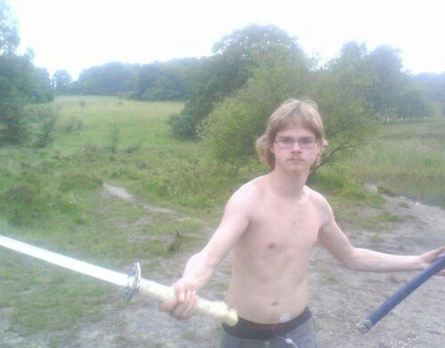
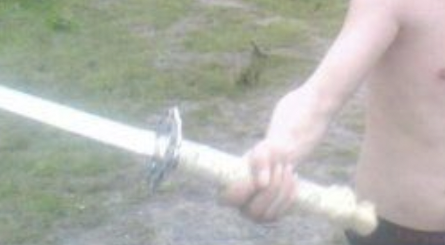

the swordsman
regarde cette image
I downloaded this picture off of the internet. for what reason i cannot say. look at it for a second. what do you see? i myself see a handsome young man (like me) shirtless, but for what looks to be a patch of some sort. skinny. and he is coming at the camera in full swing. how brave of him to do so leaving the rest of himself an open target, do you not agree? anyway,
regarde son expression
what is he trying to tell you? maybe he strikes with absolute confidence of his victory. maybe he has already scoped out the infinite outcomes of this, this chance meeting between enemies, and he has no doubt in his mind of a flawless win. that would explain the weak grip on his offhand weapon. that would also explain why he has not bothered to cast even the most basic of shielding spells (which would show up on the photo as a faint glimm- oh silly me, dear reader. i forget i am speaking to an accomplished mage in all respects). but maybe,
regards son expression once more pls,
i would like to propose an alternative explanation. maybe he doth come at you not with malicious intent, but with generosity and good purpose in mind. maybe he has sensed that you arrive unarmed. look at his arm. he is not swinging, rather he is offering you his blade. he has forgiven your offences, and forgotten his own misdoings. he urges you to do the same. is his expression not one that hides compassion, one that emanates mercy? he approaches now, not giving into the war drums of vengeance that beat in his mind, but to the chimes of good will and fellowship.
anyway, you have to admit that this is quite the powerful image, reader. is this not the dream of every boy? just as the cat knocks the vase off the counter top fully knowing that even though his action has caused a negative shift in his universe, it will lead to his human finally getting off the fucking computer and scolding him, finally giving him a piece of their attention, the only thing he has ever craved more than anything, so does the boy know that if he picks up his stick, he ushers in an age of hurt, of strife, of broken skin and broken heart.
but it will all be worth it: for he tarries with the young man from across the street who he may consider his nemesis, but knows to be his friend.
